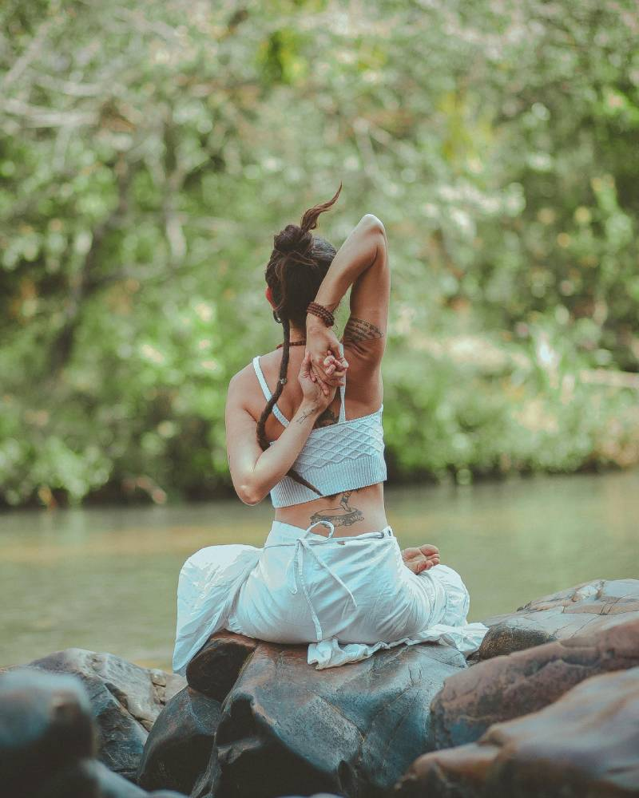
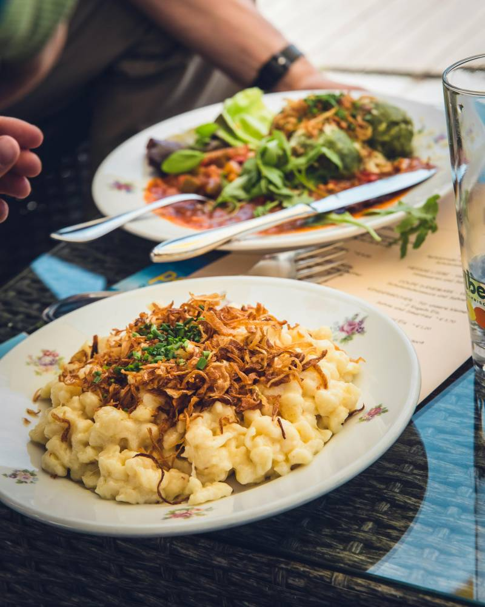
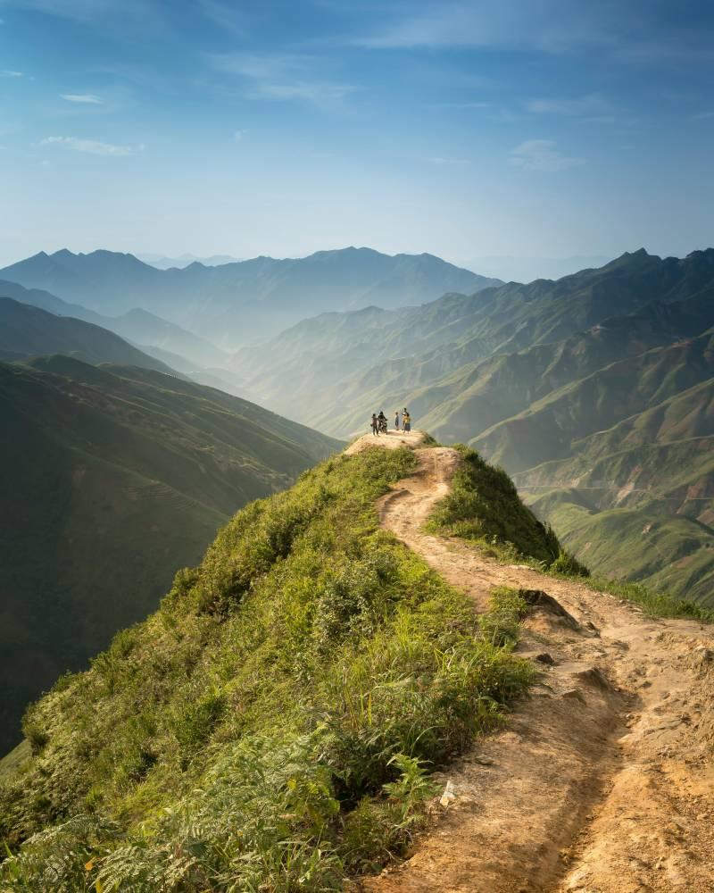

YOGA AL AIRE LIBRE
El yoga es una de las mejores maneras de conectar cuerpo, mente y naturaleza...
Descubre cómo disfrutar de la naturaleza puede transformar tu día a día...
Explora más
Somos un grupo de personas unidas por un amor común, la naturaleza. Cada uno de nosotros llegó a este proyecto por caminos distintos...
Nos apasionan las montañas, las caminatas por senderos rodeados de árboles y el sonido del agua fluyendo...
Este espacio, "A tu aire", es nuestra forma de invitarte a que tú también encuentres ese momento de calma.

El yoga es una de las mejores maneras de conectar cuerpo, mente y naturaleza...

La comida es un reflejo de nuestra salud y bienestar. En este espacio compartimos recetas...

El senderismo es una de nuestras pasiones. Caminar por la montaña nos ayuda a desconectar...